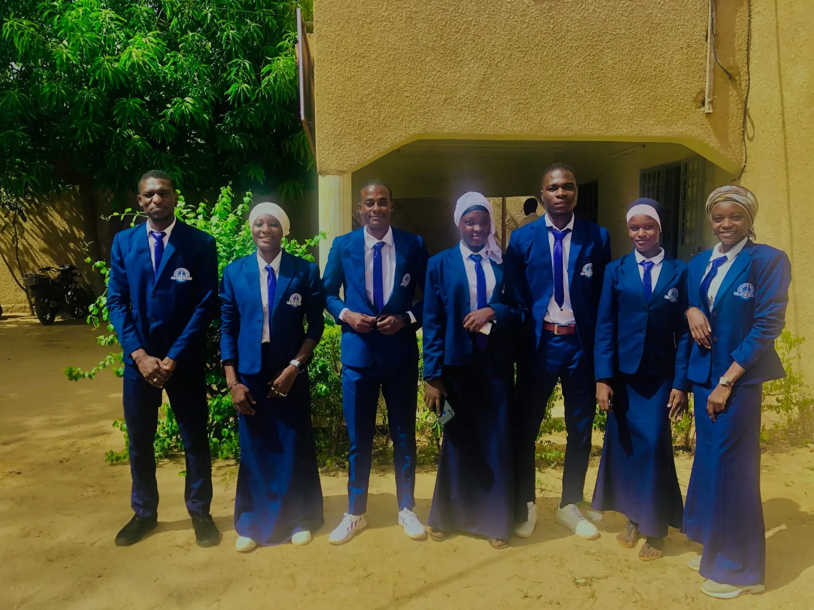
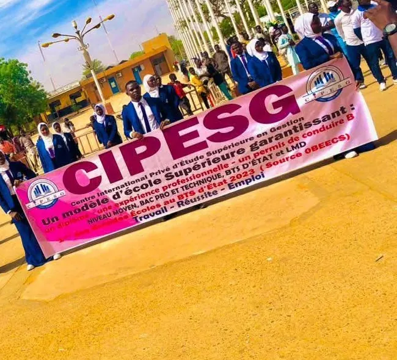
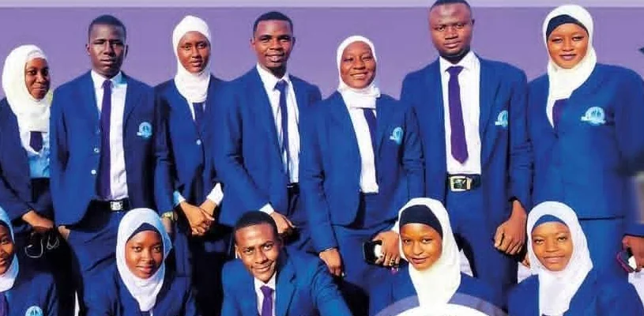

Une école supérieure de gestion, tournée vers l'emploi
Du BAC professionnel au Master, le C.I.P.E.S.G. forme des étudiants prêts pour le monde du travail.
Notre mission
Le C.I.P.E.S.G. est un établissement d'enseignement supérieur orienté vers la formation professionnelle, l'acquisition de compétences et la préparation des étudiants au monde du travail.
Sa devise résume son projet : le travail comme méthode, la réussite comme objectif, l'emploi comme horizon. L'établissement se présente comme « une école supérieure de gestion de référence internationale ».
Il propose 4 niveaux d'études et 19 filières, dans les domaines de la gestion, de la finance, du commerce, du numérique, de la logistique, du génie civil et de l'agriculture. Les parcours BTS d'État, Licence et Master professionnels sont proposés en délocalisation de l'ESCEN-Lomé.
Travail, réussite, emploi
Travail
Des formations exigeantes, centrées sur les compétences dont les entreprises ont besoin.
Réussite
Un enseignement de qualité pour mener chaque étudiant jusqu'au diplôme, du BAC professionnel au Master.
Emploi
Stage pratique, permis B et inscription dans la base de données de l'ONG ADD NAFIRA pour préparer l'insertion.

Une identité reconnaissable
Blazer bleu, chemise blanche, cravate violette et écusson de l'école : les étudiants du C.I.P.E.S.G. portent une tenue commune, sur les photos de promotion, lors des défilés et sur les plateaux de télévision.
Pourquoi choisir le C.I.P.E.S.G. ?
Les avantages présentés ici sont ceux que l'établissement propose à ses étudiants, tels qu'ils figurent dans sa brochure officielle.
Un diplôme porté par l'enseignement
L'obtention du diplôme s'appuie sur la qualité de l'enseignement dispensé.
2 à 6 mois de stage pratique
Une expérience professionnelle offerte à chaque étudiant, sous forme de stage pratique.
Permis de conduire catégorie B
Le permis B est offert dans le cadre de la formation.
Base de données ADD NAFIRA
Insertion dans la base de données de l'ONG Humanitaire et de Développement ADD NAFIRA.
Formations certifiantes
Du BAC professionnel au Master, chaque cycle conduit à un diplôme.
Des parcours délocalisés
BTS, Licence et Master professionnels en délocalisation de l'ESCEN-Lomé.
Apprendre. Pratiquer. Se préparer au monde professionnel.

- 1
Formation
Des enseignements orientés métiers, du BAC professionnel au Master.
- 2
Pratique
Des filières professionnelles : chaque cycle prépare à un métier précis.
- 3
Expérience
2 à 6 mois de stage pratique offerts pour se confronter au terrain.
- 4
Insertion
Permis B offert et inscription dans la base de données de l'ONG ADD NAFIRA.
Nos partenaires
- ESCEN
ESCEN-Lomé
Les filières BTS d'État, Licence et Master professionnels sont proposées en délocalisation de l'ESCEN-Lomé.
- ADD
NAFIRAONG Humanitaire et de Développement ADD NAFIRA
Les étudiants du C.I.P.E.S.G. sont intégrés à la base de données de l'ONG.
Votre prochaine étape commence ici.
Découvrez nos formations et préparez votre candidature pour l'année académique 2026-2027.